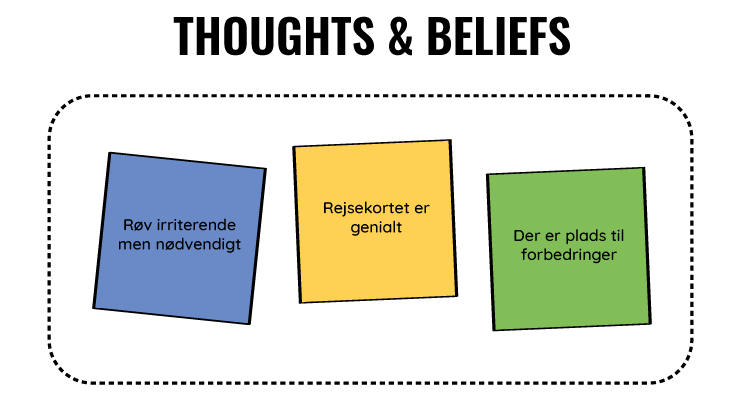

af Charlotte Mundt, Nadja Uhrenfeldt, Michelle Renee Jensen, Julie Bagerskov
Design thinking er et værktøj, der giver rammerne for at tænke kreativt, eksperimenterende, iterativt og
systematisk, når der arbejdes med produktudvikling.
Fase 1 - Understand
I den første fase, skulle vi lære brugerne at kende, forstå dem, og 'empathize' med dem. Det gjorde vi ved
at opservere dem, og interviewe dem.
Problemstillinger
Vi skulle finde ud af, hvilket problem vi ville arbejde med i dette projekt.
Vi startede ud med, i fællesskab
skulle komme i tanke om så mange problemstillinger omkring trafik som muligt. Herefter satte alle deres idéer på
tavlen, og valgte vi hvilke vi syntes der var mest spændende at arbejde med. Det her var de emner vi i første
omgang gerne ville arbejde med:
Rejsekortet
Glemsomme rejsende
Problemer med rejsekortets teknologi
At det koster penge at få et ny kort
At man ikke kan flytte penge mellem kort
Check ud problemer
Efter vi fik snakket en masse frem og tilbage, fandt vi frem til, at det skulle være check-ud problemer med
rejsekortet vi ville arbejde med.
Observationer
Vi tog ned på Lyngby st., hvor vi observerede pendlerne og hvordan de interagerede med deres rejsekort. Da vi
var der klokken 10 (uden for myldertiden), var det lidt begrænset hvor mange der rejste med deres rejsekort.
En tendens vi lagde mærke til, var at når rejsekort-brugerne havde checket ind, blev de ved med at holde
kortet i hånden, i stedet for at lægge det væk.
Da vi alle 3 også selv benytter rejsekort en gang i mellem, var det noget vi kunne genkende fra os selv.
Selvom vi ikke var der i myldertiden, stod folk stadig i (små) køer for at tjekke ud, da der kun er 3
standere på hele stationen. Så vi kan kun forestille os, hvor irriterende det kan være at bruge rejsekort i
myldertiden, hvis man skal stå i lange køer, for at kunne checke ud, så man ikke ender med en bøde.
Vi fik taget et par billeder af brugerne af rejsekort på stationen.
Mand med hat, checker ud med rejsekortÆldre mand checker ud med rejsekort
Interviews
Efter vi havde observeret rejsekort-brugerne på Lyngby St. interviewede vi 3 personer, om deres
rejsekort-forbrug, og ikke mindst, deres problemer med at checke ud med rejsekort. Hvad enten det har været
maskinerne der ikke har virket, eller fordi man har glemt at checke ud.
Den første person vi interviewede, var semi-tilfreds med rejsekortet. Hun bruger det hver dag, men mangler
virkelig en funktion, så hun kan få en kvittering på hendes rejser (kan man ikke med anonymt rejsekort), til hvis
hun skal have rejsen refunderet af hendes arbejdsplads. Hun har før glemt at checke ud, og har derfor fået
kendskab til Rejsekorts app 'check udvej', til disse situationer. Hun er dog ikke imponeret over den, da den
er ret besværlig at bruge. Hun mener rejsekortet er blevet en del bedre end det var i starten, men at der helt
klart stadig er plads til forbedring.
Anden person vi interviewede var meget optimistisk omkring rejsekort. Hun synes det er en virkelig god
opfindelse. Hun bruger rejsekortet meget, og har ikke haft nogle dårlige oplevelser med det. Hun har glemt at
checke ud et par gange, men har bare betalt "bøden" hun har fået. Hun kendte ikke til Rejsekorts app 'check
udvej', og virkede egentlig heller ikke til at gide at sætte sig ind i appen. Hvis hun skulle bedømme
rejsekort på en skala fra 1-5, hvor 1 er dårlig og 5 er godt, var det en klar 5'er.
Vores tredje interviewee bruger kun rejsekortet en gang i mellem. Hun mente det var omkring 4 gange om året,
når hun ikke kunne bruge bilen. Hun synes der alt for tit er problemer med, så det gør det besværligt at bruge
. Hun har haft problemer med, at maskinen på stationen ikke har registreret hendes kort, som resulterede i en
ikke så behagelig diskussion med en togkontrollør. Hun kendte ikke til 'check udvej' appen, men ville godt
sætte sig ind i den, hvis hun glemmer at checke ud.
Vi spurgte hende, hvad der kunne gøre det nemmere at bruge rejsekort, og der mente hun, at der burde være et
bedre system, til når man rejser flere på ét kort, da man ikke kan se om den rent faktisk har checket alle ind
. Det skulle også være nemmere at tanke et upersonligt rejsekort op. Hun syntes alt i alt, at rejsekortet er
super smart når det virker, men at der er for mange fejl.
Ud fra vores 3 interviews, har vi lavet et user empathy map.
User empathy map

Fase 2 - Ideate
Ud fra vores undersøgelser, har vi fundet lidt spørgsmål vi kan stille os selv, til at finde frem til nogle gode og spændende idéer.
Spørgsmålene vi kom op med:
Hvordan kan vi undgå at folk glemmer at checke ud?
Hvordan kan vi gøre det nemmere at bruge et anonymt rejsekort?
Hvordan kan vi gøre brugeroplevelsen til en bedre oplevelse?
Hvordan kan vi undgå driftproblemer?
Hordan kan vi sørge for, at man kan checke ud, uden at have kortet fremme?
Disse spørgsmål blev vi ved med at spørge os selv, da vi brainstormede over idéer til løsninger af problemerne med rejsekortet.
Brainstorm
Vores brainstorm endte med at se sådan her ud.
Ud fra vores brainstorm begyndte vi at konceptudvikle på 4 idéer.
Check ind/ud app med placeringsregistrering
Denne idé går ud på, at vi ville udvikle en app, hvor man kan checke ind og ud, uden brug af det fysiske kort. For at det kan lade sig gøre, er det et krav at mobilens placering skal være aktiveret.
Når du står på en station, eller ved busstoppestedet, åbner du app’en op, og trykker check ind. Telefonen kan se hvor du er, og ved derfor hvilket stop du er checket ind ved.
Når du skal afslutte din rejse, trykker du på knappen check ud, og igen ved telefonen hvor du er, og hvor du har afsluttet din rejse. Herefter bliver prisen udregnet som den bliver nu.
App’ens udseende skal være virkelig simpelt og nemt at finde rundt i. På hovedsiden er der en kæmpe blå knap, hvor der står check ind. Når du er checket ind, skifter knappen til en lige så stor blå knap, der står check ud på.
Ud over at kunne checke ind og ud, kan man også se ens saldo, og tanke “kortet” op.
For at man ikke glemmer at checke ud på sin rejse, vil der også være en timer-funktion. Her kan du indstille den efter hvor lang tid du regner med, at rejsen vil vare, så du bliver påmindet om at checke ud.
Når du har påbegyndt en rejse, vil der også være en notifikation på din startskærm, der ikke forsvinder før du afslutter din rejse. På denne låseskærm vil der også være en knap til du kan checke ud. Denne notifikation kan ikke swipes væk, før rejsen er afsluttet.
Sensorregistrering i toget
En idé er sensorer i toge og busser. Vi har 3 forskellige muligheder at gøre det på.
Vores første mulighed er, at der skal installeres sensorer i togenes indgang, så i det man træder ind i toget, bliver kortet checket ind, og du er klar til rejsen.Når du igennem sensoren igen, bliver du checket ud. Skal du videre med et tog mere, eller en bus, bliver du checket ind igen, og rejsen fortsætter. Her er det eneste krav, at du har dit rejsekort på dig.
Anden mulighed er, at der bliver sat sluser op ved alle indgange til stationerne, hvor man bliver checket ind når man går ind på en station, og checket ud når man går væk fra en station. Den vil automatisk registrere, at hvis du allerede er checket ind, så bliver du checket ud.
Den tredje mulighed ville være, at i togene og busserne, bliver der sendt nogle bølger ud, hvert 5. sekund, som registrerer alle de rejsekort der er rejser med med toget eller bussen. Når bølgerne begynder at registrere at rejsekortet er i nærheden, det vil sige i toget eller i bussen, bliver man checket ind. Når bølgerne ikke længere kan se rejsekortet, bliver man checket ud.
Stationsskiltning evt. med lidt humor
Brugerne af rejsekortet skal huskes på at checke ud. Det kan fx gøre ved hjælp af nogle store skilte, som hang på vej væk fra toget. Disse skilte måtte gerne have en smule humor, som kan få brugeren til at smile lidt.
Check ind/ud standere i toget
Check ind/ud standere i togene, ligesom i busserne. Her skal check ind standeren være på ydersiden af toget og check ud standeren skal være på indersiden af toget.
Check ud sidder på ydersiden, så man nemt lige kan checke ind, på vej ind i toget. Der vil sidde en på hver af dørene, så så mange som muligt kan komme hurtigt ind i toget.
Check ud sidder på indersiden af dørene, så man har mulighed for at checke ud når toget nærmer sig stationen, eller når man er på vej ud af dørene.
Standerne er kun aktive når togene er i nærheden af stationerne. Det vil derfor ikke være en mulighed at snyde med at checke ind og ud i løbet af køreturen.
Fase 3 - Experiment
Første prototype - Rejsekort app
Rejsekorts app, var den første idé vi valgte at arbejde videre på. Vi gik igang med at samle vores idéer til
app'en,
og begyndte på en grov prototype.
Vores første skitser af rejsekortets app.
Prototype
Ud fra skitserne, tegnede og klippede vi vores prototype, og farvelagde den en lille smule.
Vores prototype vi har testet på nogle brugere, ser således ud:
Vi testede vores prototype på nogle brugere, og fik en masse gode noter og tips.
Feedback capture grid
Vi fik en del noter fra vores tests, som vi brugte til at lave et feedback capture grid.
Vi har nu fået en helvedes masse idéer til ting og funktioner der kan tilføjes, eller gøres bedre. Samt lidt
idéer og anbefalinger til layoutet af app'en.
Anden prototype - Rejsekort sensor i tog og bus
Vi lavede en hurtig og nem prototype af et rejsekort, som bliver registreret når man går ind i toget eller
bussen, og så bliver man checket ud, når man går ud af toget eller bussen igen.
Prototype
Vi testede vores idé.
Feedback capture grid
Vi fik rigtig god feedback på vores prototype brugertest, og lavede et feedback capture grid over dette.
Iterationer
I vores ideration proces har vi valgt at arbejde videre med app løsningen.
Det har vi gjort ved vi blandt andet har arbejdet med et spørgeskema. Vi gået efter af få en større gruppe mennesker til at deltage i vores undersøgelse, vi har lavet en kvantitativ undersøgelse.
Spørgeskema til vores Idéforslag af Rejsekort
Vi lavede et spørgeskema for at få et overblik over bl.a., hvor mange der bruger rejsekort, og hvorfor nogle
ikke bruger det.
I dette spørgeskema spurgte vi bl.a. ind til folks køn og alder for at kunne skabe et overblik over målgruppen, Rejsekortet nuværende appellerer til.
Diagrammet til højre viser alderen for dem, der har udfyldt vores spørgeskema.
79% af dem der har svaret bruger rejsekort, og 21% bruger ikke rejsekort.
Vi har samlet svarene på dem, som har svaret ja til, at de bruger rejsekort med deres aldre,
for at få et overblik over, hvilken målgruppe, der primært bruger rejsekort.
2 ud af 3 under 18 år har svaret ja til, at de bruger rejsekort.
67 ud af 89 af unge mellem 19 og 29 har svaret ja til, at de bruger rejsekort.
22 af dem svarede nej, og 13 af dem bruger ikke rejsekort, fordi de har ungdomskort i stedet. 2 af dem
forklarede, at de finder rejsekort systemet besværligt, bl.a ved blot at skulle bestille et kort. De finder det meget omfattende med NemID login.
7 ud af 7 personer i alderen mellem 30 og 39 bruger rejsekort.
5 ud af 6 bruger rejsekort i alderen mellem 40 og 49 år.
Den ene som svarede nej, bruger ikke rejsekort, da vedkommende i stedet kører i bil.
9 ud af 10 i alderen mellem 50 og 59 svarede ja til, at de bruger rejsekort.
Den ene som ikke bruger rejsekort kører i bil.
2 ud af 2 i alderen 60+ bruger rejsekort.
Sektion 1
"Vores idé går ud på, at det er en app der kan bruges i stedet for det fysiske rejsekort.
Med denne app har du mulighed for at checke ind og ud direkte i app'en helt uden brug af kortet eller rejsekortstanderne. Når du står på en station eller ved busstoppestedet, åbner du app'en op, og trykker check ind. Telefonen kan se hvor du er, og ved derfor hvilket stop du er checket ind ved. Når du skal afslutte din rejse, trykker du på knappen check ud.
App funktioner:
Check ind/ud
Tank kortet op
Tjek saldo
Beregn pris for rejse
Se rejsehistorik"
Derefter lavede vi to sektioner.
Én sektion til dem der svarede ja til, at de bruger rejsekort, og én sektion til dem der svarede nej.
Under sektionen for brugerne skrev vi en lille beskrivelse af, hvad vores idéforslag er til Rejsekort, så vi kunne spørge, hvad folk egentlig ville syntes om sådan en app.
Her fandt vi ud af, at 61,7% syntes, det var en god idé, og at de klart ville benytte sig af den.
31,9% ville overveje det, 5,3% regnede ikke med, at de ville benytte sig idéen, og 1,1% svarede, at de ikke ville bruge denne app.
Herefter ville vi prøve at undersøge om hvor mange, der havde prøvet at glemme
enten at checke ind eller checke ud.
Det gjorde vi for at finde ud af, om det overhovedet ville være nødvendigt at skabe en alternativ løsning til at undgå så mange forglemmelser som muligt.
Her fandt vi ud af, at størstedelen har prøvet at glemme minimum én gang at checke ind eller checke ud.
89,4% svarede ja, og 10,6% svarede nej.
Dette viser, at systemet ikke er optimalt indenfor brugervenlighed, da der let kan opstå forglemmelser vedr. check ind og check ud funktionen.
Herefter undersøgte vi, hvordan folk prøver at huske sig selv på at checke ud efter en rejse.
54 ud af de 94 svarede, at de holder kortet i hånden under rejsen.
Det er altså over halvdelen af besvarelserne der er så nervøse over at glemme at checke ud,
så de bliver nødt til at sidde med kortet i hånden.
Herefter spurgte vi, hvad de ville gøre, hvis de glemte at checke ud.
Her svarede 37 ud af de 94, at de ville benytte sig af den eksisterende app check udvej.
23 af dem svarede, at de ville gå tilbage.
Og 34 af dem svarede, at de ikke ville gøre noget udover at betale bøden.
Vi spurgte hvor ofte, folk tager det offentlige transport for at se. Det gjorde vi for at se, om brugerne af
rejsekort var dem som ofte tager det offentlige, eller om det er dem, som primært bruger andre transportmidler, men har rejsekortet som et resterende middel.
Undersøgelsen viste, at 35,9% bruger sjælendt det offentlige.
32,6% bruger ofte offentlig transport.
Og 31,5% bruger det offentlige hver dag.
Så det viser at størstedelen af rejsekort brugerne ikke tager det offentlige som det primære transportmiddel
for hverdagen.
Vi spurgte også, hvor ofte de bruger rejsekortet for at se en sammenhæng til spørgsmålet ovenover.
Det gjorde vi for at få en fornemmelse af hvor ofte, de bruger deres rejsekort i forhold til hvor ofte, de tager offentlig transport.
45,7% svarede, at de bruger deres rejsekort nogle gange om måneden.
23,4% svarede, at de bruger rejskortet årligt.
19,1% svarede, at de bruger deres rejsekort ugebasis.
Og 11,7% svarede, at de bruger deres rejsekort hver dag.
Hefter spurgte vi, om rejsekortet er et supplement til en anden billettype, som f.eks. pendlerkort eller
ungdomskort.
64,9% svarede nej, og 35,1% svarede ja.
Vi ville derudover undersøge hvor nemt brugerne synes, det er at tanke rejsekortet op, da vi selv ville optimere tanke op systemet via vores app.
Hvis man tanker op via internettet, så tager det 4 timer, før man kan checke ind på stationerne og 8 timer før, man kan checke ind i busserne.
Så hvis man skal afsted med det samme, og skal tanke op, så bliver man nødt til at gøre det via standerne på
stationerne.
Det kan godt være et problem, hvis man ikke er ved en station, men man skal med bus.
Dog har vi fundet ud ud fra vores undersøgelse, at 31,9% finder det meget nemt at tanke op hvilket er
størstedelen.
Ud fra vores undersøgelse om, hvorvidt folk er tilfredse med Rejsekort systemet overordnet lå primært mellem 5
og 8 på skalaen fra 1 til 10.
Hvor 11,7% lå på 5.
21,3% lå på 6.
17% lå på 7.
Og 23,4% lå på 8.
Sektion 2
2. sektion var til dem, der ikke bruger eller har et rejsekort.
Som forklaret på første side, så har de fleste, som ikke bruger rejsekort, ungdomskort. Et kort som studerende bliver tilbudt med alle zoner til en lavere månedspris.
Andre synes, at det er for besværligt bare at bestille kortet, da man skal bruge NemID og vedhæftet gyldigt
legitimation.
Nogle synes bare, det er et besværligt system, og andre vælger at køre i bil i stedet for det offentlige
transport.
For at få et overblik over, hvor mange ikke-brugere der faktisk tager det offentlige transport, spurgte vi dem i
spørgeskemaet.
Over halvdelen tager det offentlige transport nemlig 56%.
28% tager sjælendt det offentlige.
12% tager ofte offentlig transport.
Og kun 4% tager aldrig det offentlige.
Så over halvdelen af dem som har sagt nej til, at de ikke bruger rejsekort, tager stadig det offentlige
transport hver dag.
Hefter satte vi den samme beskrivelse ind af vores idéforslag som i den 1. sektion,
hvor vi så spurgte, om de ville overveje at gå over til rejsekort, hvis denne app blev en realitet.
Her var der en stor splittelse mellem svaret “helt klart", “muligvis” og “det tror jeg ikke”.
Der ligger nemlig 32% på alle tre muligheder, og kun 4% på muligheden “ellers tak”.
Til sidst stillede vi spørgsmålet til de personer, som enten havde svaret “helt klart” eller “muligvis” på forhenværende spørgsmål, om hvordan de ville benytte appen.
Størstedelen som ligger på 62,5% svarede, at de ville have en app, som erstatter det fysiske kort.
Hvor 25% svarede, at de ønskede, at appen kun var et supplement til det fysiske kort.
Og de sidste 12,5% svarede, at de ikke ved det.
Spørgeskema konklusion
Vi er kommet frem til, at der er rigtig mange brugere af rejsekortet, trods de fleste faktisk ikke er super tilfredse med selve systemet.
Den procentdel som ikke har et rejsekort er bl.a. studerende, som får et bedre tilbud via Ungdomskortet.
Derfor tænker vi, at det ikke ville være løsningen at afskaffe rejsekortet men i stedet en videreudvikling, hvor man kan finde brugbare løsninger indenfor de største problemstillinger vedr. rejsekortsystemet.
De fleste af brugerne er nervøse for, at de glemmer at checke ud efter en rejse. Derfor sidder langt de fleste med deres rejsekort i hånden under rejsen. Dette kunne være én af problemstillingerne, som der skal tages hånd om.
Vores løsningsforslag til denne problemstilling er at overføre det fysiske rejsekort over til en app, så man ikke længere behøver at sidde med det fysiske kort i hånden under rejsen.
Samtidig kan man sagtens lave en form for påmindelse eller alarm på appen, som kan gøre folk opmærksomme på, at de skal huske at checke ud.
Derudover har vi fundet ud af, at de fleste studerende, som besvarede vores spørgeskema benytter sig af ungdomskortet.
Derved kunne man eventuelt tilføje nogle bonusordninger. Dette kunne man gøre via bl.a. spil, som kunne tiltrække de studerende, som der pt benytter sig af ungdomskortet.
Prototypen
Denne omgang valgte vi at lave vores prototype i XD i stedet for på papir.
Vi var enige om at det ville være nemmere for brugerne at forestille sig hvordan tingene skal være i denne udgave af prototypen.
Hvis du har lyst til at prøve app'en af på telefonen kan du åbne linket til den, ved at klikke på knappen herunder
Vi var ude og teste vores prototype på et par brugere.
Efter vores brugertest kunne vi godt have gået til ideate fase og have udviklet yderligere på ideen.
Konklusion
Vi kan konkludere at vi reelt ikke løser problemet med, at det er svært at huske at checke ud, med vores løsning. Vi har til gengæld fundet frem til nogle gode løsninger, der gør brugen af rejsekortet nemmere for brugeren.
Undervejs i vores process, og især i vores tests med testbrugere, har vi fået mange gode idéer til hvordan man generelt kan bedre rejsekortet.